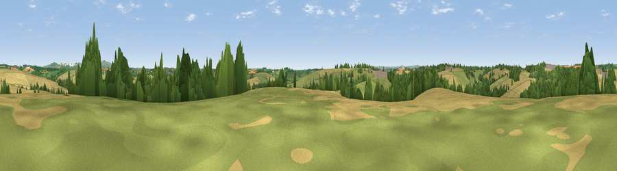

Viewpoint near Tresillian
#31838 in England · top 59% of its area beats it · near TresillianWhere it is
The exact computed spot (SW 86375 48225). Click the marker for map links.
The view, rendered

A 360° render of this exact spot computed from the terrain model, tree cover and land cover — summer colours, afternoon light, calibrated against photographs of famous viewpoints. Real trees, hedges and buildings will differ in detail.
The panorama
Grey silhouette: terrain skyline in each direction (720 bearings, Earth curvature and refraction included). Dashed green: skyline with trees (+15 m) and buildings (+8 m) as obstacles. Blue strip: how far the ground is visible on each bearing.
Where the view opens
Wedge length = distance to the farthest visible ground on that bearing (vegetation-aware). Rings at 10, 25 and 50 km.
What fills the view
46% cropland · 38% grassland · 14% woodland · 2% built-up
Angular shares of the visible panorama (visual magnitude), not map area. Landscape diversity 0.47 (0–1 Shannon).
Key numbers
More beautiful places nearby
The staircase of upgrades: each row has a higher view potential than everything closer. Driving times are estimates from straight-line distance, calibrated against real road routing — check an actual route before setting out.
| Place | Direction | Drive | Score |
|---|---|---|---|
| Viewpoint near Tresillian | S · 2 km | ~5 min | 49.3 |
| Viewpoint near Ladock | NNE · 5 km | ~11 min | 51.2 |
| Viewpoint near Trispen | N · 5 km | ~12 min | 58.5 |
| Viewpoint near St. Newlyn East | NNW · 6 km | ~13 min | 70.6 |
| Viewpoint near Trethosa | NE · 9 km | ~17 min | 78.5 |
| Viewpoint near Penhale | NNE · 9 km | ~18 min | 81.7 |
| Viewpoint near Foxhole | ENE · 12 km | ~23 min | 84.3 |
| Viewpoint near Foxhole | ENE · 13 km | ~23 min | 86.4 |
50.29521, -5.00072 · source: screening · position refined by local search. Computed location — check access rights before visiting.